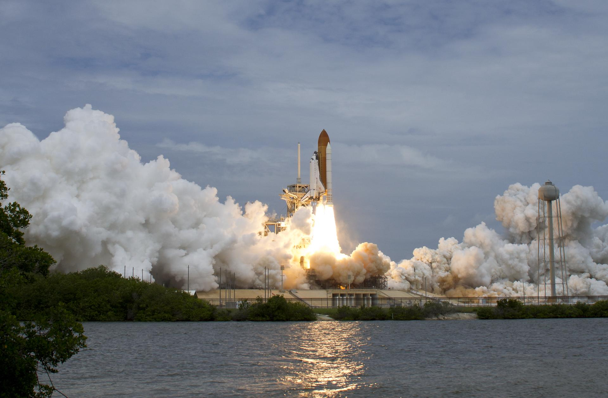

Reusing a rocket is widely assumed to make spaceflight cheaper. This study asks a more precise question: under what conditions does reusability actually reduce long-term launch costs, and when does recovering the vehicle quietly cost more than discarding it?
Rocket reusability is widely thought of as a guaranteed method of lowering the cost of space flight. But, its benefits depend on the combination of a variety of factors, such as how the vehicles are designed, recovered, and operated. This paper examines how rocket reusability can help in lowering long term launch costs, and what determines if reusable launch vehicles (RLVs) are economically viable. Using technical reports, academic studies, and cost modeling methods, this study found that RLVs were most successful with high launch frequencies, low refurbishment costs, quick turn-around times, and reliable recovery systems. The study also found that payload size, vehicle design, certification requirements, and environmental impacts all influence whether it could be cost effective compared to expendable launch systems. Overall, rocket reusability can reduce long-term launch costs, but only when engineering design, operational efficiency, safety verification, and market demand are balanced together.
A single launch can cost hundreds of millions of dollars, yet the vehicle is often discarded after one flight. Recovering and reflying that hardware should save money, but recovery, refurbishment, inspection, and safety certification add cost back in. The savings only accumulate when the right conditions hold.

Each strand of the research maps onto one of four conditions. Reusability reduces long-term cost only when all four are balanced together.
Optimizing only for payload or ascent performance can make a vehicle too complex to inspect and refly. Reusability is an optimization problem across the whole life cycle, not a single design feature.
Fast turnaround, a light inspection burden, and disciplined maintenance, closer to an airline than a rebuild, keep refurbishment from dominating total life-cycle cost.
Precise descent and landing return hardware in reusable condition. Recovery costs payload mass, so safe, accurate landing is a core requirement of reuse, not an optional add-on.
Reuse reduces waste, but launch frequency and fuel choice dominate climate impact. Hydrogen burns cleaner than methane or kerosene, yet launch and re-entry emissions persist.
A comparative analysis of five independent cost models produced three consistent findings.
Across all five models, annual launch rate was the single biggest driver of viability. Below roughly 10–15 launches per year, expendable vehicles often remain cheaper.
For a 20-ton payload, reuse beats expendable by about 20 launches per year. For a 500 kg payload, break-even does not arrive until roughly 88 launches per year.
High cadence is not sufficient on its own. If recovery and refurbishment costs stay high, the expected savings from reuse never actually materialize.
The analysis draws on peer-reviewed studies, NASA technical reports and standards, cost-modeling literature, and a primary-source interview. A selection of key sources is linked below; the full reference list appears in the final paper.